Nhà đầu tư mở được một tin bán, tin thuê dài hạn của mọi nguồn trên cổng Invest để xem đủ thông số và liên hệ người đăng
Vì sao làm
Vấp 1 của phiên lái thử s03-len-cong, Mạnh tách làm riêng ngày 04/11/2026. Làm sau mốc 05/11, gộp sau #305. Không có bài gốc và chưa có ảnh, nên trang chỉ nhiều hơn thẻ ở block, tầng, tin tương tự và đường dẫn chia sẻ.
Đã hứa
- AC-1 — Given thẻ trên trang Bán, Cho thuê dài hạn và trong khối tin cùng tiêu chí, When bấm thân, giá, tên người đăng, địa chỉ của thẻ, Then URL thành `/listing/<offer_id>`; bấm liên kết phường thì tới trang phường; bấm nhãn, Xem số thì URL không đổi.
- AC-2 — (cross-layer) Given ma trận loại hình (căn hộ, nhà, đất) × kind × đủ hoặc thiếu trường ghi vào DB thử, When mở trang tin, Then hiện đúng giá, đơn giá, nhãn tin, thông số gồm block, tầng, vị trí, tuổi tin, người đăng; trường thiếu thì bỏ dòng; tin cấp thị trường có tên thị trường, không liên kết phường; mọi cột trang đọc đều có trong `CLOUD_ALLOW`.
- AC-3 — (cross-layer) Given tin có số, When tải trang qua máy chủ Next và chưa bấm, Then phản hồi HTTP, kể cả dữ liệu nhúng `__next_f`, không chứa số; bấm Xem số gọi đúng `/api/v1/listings/<id>/contact`; mọi trạng thái `ST-lien-he-*` và nhãn số giống trên thẻ.
- AC-4 — (cross-layer) Given tin của S03, S05, S06 mang giá trị đánh dấu ở mọi cột cấm (`source`, `listing_url`, `post_ids`, `seller_ref`, `field_provenance`, `street_number`, `unit_number`, toạ độ) và tên nguồn thật giả trong tên người đăng, block, tầng, đường, When tải trang chưa đăng nhập qua máy chủ Next, Then phản hồi HTTP gồm thẻ head, meta description, dữ liệu nhúng, cả thẻ trong khối tin cùng tiêu chí, không có giá trị đánh dấu nào; bản sao lộ một cột, kể cả chỉ truyền qua props mà không in, thì đỏ và gọi tên cột.
- AC-5 — (cross-layer) Given ma trận tin không hiện (id lạ, S02, S08, quá hạn, kind khác, giá phi lý, không có loại hình), When mở `/listing/<id>`, Then mọi ca cùng trạng thái 404 và cùng một câu «Tin này không còn hiện», khớp `getOfferPhone`; tin hiện được thì 200.
- AC-6 — Given listing thuê ngắn hạn `abnb_…`, When mở `/listing/<id>`, Then trang cũ không đổi, KPI, lịch, comps còn nguyên, và `check-listing-no-airdna` xanh.
- AC-7 — (cross-layer) Given ma trận tin cùng và khác phường, loại tin, loại hình, biên diện tích ±25%, When mở tin, Then chỉ hiện tin đúng tiêu chí, không có chính nó, tối đa 6, đều qua `VISIBLE`; không có tin thì `Empty` kèm nút về danh sách đã lọc; tin cấp thị trường không có khối; lỗi truy vấn thì báo trong vùng kèm Thử lại.
- AC-8 — Given trang tin, When đọc thẻ head, Then có `noindex`, tiêu đề không có tên người đăng; trang listing thuê ngắn hạn không đổi.
- AC-9 — Given bản chạy ở 375 và rộng, sáng và tối, When xem các trạng thái của bảng Đặc tả UX, Then đọc được, liên hệ thấy mà không phải cuộn xa, không tràn ngang, đúng luật ReUI.
Thiết kế
docs/superpowers/specs/2026-11-04-trang-chi-tiet-tin-design.md
Quyết định
- 2026-11-04 · Máy · approach · S1 — Đã tra tri thức: Trang chi tiết tin bán, tin thuê dài hạn trên cổng Invest, thẻ tin mở được, xem số, nhãn chưa xác minh, tầng A nguồnKho đã khai tri_thuc — bước thiết kế tra trang trước khi chọn.
- 2026-11-04 · Máy · approach · S1 — Trang tin dùng /listing/<offer_id>, chung route với listing thuê ngắn hạn; không thêm slug.CONTEXT.md coi listing là cha của mọi tin và đã có slug listing; offer_id đo 04/11 là offer_ + 16 ký tự ở cả ba nguồn, không lộ nguồn.
- 2026-11-04 · Máy · approach · S1 — Xem số giữ nguyên OfferContact và route liên hệ; số không vào HTML của trang tin.Luật 6 AGENTS.md chốt cách trả số; E3 đo cả dữ liệu nhúng.
- 2026-11-04 · Máy · descope · S1 — Không hiện bài gốc, liên kết nguồn, tên hay mã nguồn; vấp 2 của phiên lái thử không làm ở vòng này.Luật 6 AGENTS.md: nội dung bài gốc chỉ ở /ops; lời giao cũng nêu rõ.
- 2026-11-04 · Máy · descope · S1 — Không bản đồ, số nhà, số căn trên trang tin.Đo 04/11: S06 có toạ độ 62.349/62.387 nhưng CLOUD_ALLOW của sale_offers không có toạ độ, số nhà, số căn.
- 2026-11-04 · Máy · descope · S1 — Không ảnh, không ô ảnh trống; ảnh do hàng anh-tin-cong-khai làm.Lộ trình đã có hàng AC1 riêng.
- 2026-11-04 · Máy · approach · S1 — Mọi tin không hiện cùng một 404, dùng chung VISIBLE với danh sách và route liên hệ.api-surface.ts đã chốt cách này để không ai dò được tin ẩn.
- 2026-11-04 · Máy · descope · S1 — bỏ design-pass — lời giao cấm code trước Cổng Phạm vi, nên chưa có bản bấm được; chạy design-pass đầu S3 trên route thật.Bản bấm được cần mã trang; Cổng Phạm vi duyệt bằng hình luồng và bảng trạng thái.
- 2026-11-04 · Máy · approach · S1 — Trang tin có lên máy tìm kiếm không? Máy khuyên noindex lúc đầu, mở sau bằng một dòng.Mỗi tin một trang kèm tên người đăng làm tên dễ tìm hơn trang danh sách; đã vào chỉ mục thì rút rất chậm.
- 2026-11-04 · Máy · approach · S1 — Hai khối so với phường và tin cùng tiêu chí có vào vòng này không? Máy khuyên có cả hai.Không bài gốc và ảnh, thiếu hai khối này thì trang gần như chép lại thẻ.
- 2026-11-04 · Máy · approach · S1 — Bấm chỗ nào trên thẻ thì mở tin? Máy khuyên toàn thân thẻ, trừ liên kết phường, nhãn, Xem số.Vấp 1 nói người xem bấm thân thẻ, giá, tên người đăng, địa chỉ; bản gốc ListingCard chỉ có liên kết ở tên và ảnh.
- 2026-11-04 · Máy · approach · S1 — Đường dẫn trang tin là gì? Máy khuyên /listing/<offer_id>, chung route với listing thuê ngắn hạn.portals.md xếp /listing/** vào Invest công khai và quy ước số ít cho trang chi tiết; gap-probe chỉ ra câu trích cũ không quyết URL, còn URL gửi ra ngoài thì khó đổi.
- 2026-11-04 · Máy · approach · S1 — Có đợi ảnh và bản đồ rồi mới ra trang không? Máy khuyên không đợi.Ảnh đã có hàng AC1 ghép vào sau; bản đồ cần đưa toạ độ lên cloud, S06 có toạ độ 62.349/62.387 tin, là việc sync-cloud hạng T3 và lộ vị trí căn.
- 2026-11-04 · Máy · approach · S1 — Mọi tin không hiện cùng trạng thái 404 và cùng câu «Tin này không còn hiện», không tách câu «đã hết hạn».api-surface.ts đã chốt 404 chung cho tin ẩn; thêm câu thân thiện để đường dẫn cũ đã gửi không thành trang lỗi trơn.
- 2026-11-04 · Máy · approach · S1 — Có so giá với phường không? Máy khuyên dời sang hàng riêng; khối tin cùng tiêu chí vẫn làm.500_asset_stats.sql khoá theo phường × kind, không có loại hình; tin bán 30 ngày gồm nhà 19.799, căn hộ 7.351, đất 4.440, nên một căn hộ sẽ bị so với trung vị phần lớn là nhà.
- 2026-11-04 · Người · seal · gate1 —
- 2026-11-05 · Máy · approach · S2 — Phép đo HTTP chạy next dev từ bản sao ngoài cây vật, và các bản phá sửa trên bản sao đó.E3, E4 đòi phản hồi thật gồm __next_f và bản phá chỉ truyền cột qua props; next dev khoá theo thư mục và lượt chấm không được ghi vào cây.
- 2026-11-05 · Máy · fix · S3 — Ca «kind khác» của AC-5 đo bằng việc DB từ chối ghi, không thành dòng ma trận HTTP; thân 404 so sau khi bỏ script; id sai dạng chỉ so trạng thái và câu.Ràng buộc sale_offers_kind_chk chặn mọi kind khác; bản dev nhúng stack trace và giờ chạy vào script nên hai lần tải cùng một id cũng khác nhau (app/tests/trang-chi-tiet-tin-db.test.tsx).
- 2026-11-05 · Máy · fix · S3 — Sửa thêm app/src/components/shell/nav.tsx: tin rao không tô mục «Cho thuê» nữa, và không tô mục nào; 404 của route dùng chung cho cả id abnb_ lạ.Nav cũ coi mọi /listing/ là thuê ngắn hạn; not-found.tsx của route không nhận được id nên không phân biệt được nhánh.
- 2026-11-05 · Máy · fix · S3 — Đổi hành vi danh sách công khai: getPublicOffers nay che street mang tên nguồn thành null, ngoài phạm vi chữ của AC-4 vốn nói về trang tin; đo 05/11 trên DB thử, 0/62.724 tin có đường bị che nên hôm nay danh sách không đổi gì thấy được.Trang tin và thẻ dùng chung hàm dựng dòng toPublicOffer; ca TCT-AC-4 danh sách ở app/tests/trang-chi-tiet-tin-db.test.tsx có đối chứng dương đường thường giữ nguyên. Trên cloud không có source_registry nên bộ che không chạy ở lớp này, sync đã che trước khi gửi.
- 2026-11-05 · Máy · fix · S4-r1 — Sửa 13 phát hiện trong hợp đồng, toàn bộ ở thước đo, không đổi mã sản phẩm: ma trận sinh từ tích ba trục, so cặp nhãn với giá trị, 11 cột cấm từng ô, đối chứng thẻ tin cùng tiêu chí có trên trang, ca dương cho cột source, ca HTTP cho tin cấp thị trường, tiêu đề, listing thuê ngắn hạn; phép so thân 404 chạy trên next build và tính cả __next_f.Lượt r1 mọi eval xanh nhưng review chỉ ra các thước chưa từng đỏ đúng chỗ (review-findings.md, tid t4–t17). Ca tin-rao-cong-khai E7 đỏ do tách NHIEU_TEN khỏi hàm nên đổi đoạn đột biến cho khớp, nghĩa ca không đổi.
- 2026-11-05 · Máy · revisit · S4-r2 — Dừng ở vòng 2 và trình Cổng Bằng chứng, không tự chạy vòng 3: verdict PASS nhưng review còn ba lỗ thước trong hợp đồng (AC-2 chưa đi đường ghi DB tới trang cho cả ma trận, AC-4 chưa quét tên nguồn trên thẻ tin cùng tiêu chí, AC-5 thiếu giá thuê dưới sàn và area_id NULL); vòng này không có khối nền hạ tầng, chỉ có bước nền của lượt chấm.Ba lỗ cùng lớp với vòng 1 (hình dạng 2, 5 trong review-findings.md), nên theo điều khoản dừng-vá phải để người chọn; mã sản phẩm tương ứng dùng chung toPublicOffer và VISIBLE, tức thước thiếu chứ chưa thấy lỗi đang chạy.
Bằng chứng
Các eval
| Eval | Tiêu chí | Loại | Verdict | run_id | verified_at |
|---|---|---|---|---|---|
| E1 | AC-1 | test | PASS | minted-trang-chi-tiet-tin-E1-r2 | 2026-11-05T01:25:42Z |
| E1u | AC-1 | ui-check | PASS | minted-trang-chi-tiet-tin-E1u-r2 | 2026-11-05T01:25:42Z |
| E2 | AC-2 | test | PASS | minted-trang-chi-tiet-tin-E2-r2 | 2026-11-05T01:25:42Z |
| E2b | AC-2 | test | PASS | minted-trang-chi-tiet-tin-E2b-r2 | 2026-11-05T01:25:42Z |
| E3 | AC-3 | test | PASS | minted-trang-chi-tiet-tin-E3-r2 | 2026-11-05T01:25:42Z |
| E4 | AC-4 | test | PASS | minted-trang-chi-tiet-tin-E4-r2 | 2026-11-05T01:25:42Z |
| E5 | AC-5 | test | PASS | minted-trang-chi-tiet-tin-E5-r2 | 2026-11-05T01:25:42Z |
| E6 | AC-6 | script | PASS | minted-trang-chi-tiet-tin-E6-r2 | 2026-11-05T01:25:42Z |
| E6b | AC-6 | test | PASS | minted-trang-chi-tiet-tin-E6b-r2 | 2026-11-05T01:25:42Z |
| E7 | AC-7 | test | PASS | minted-trang-chi-tiet-tin-E7-r2 | 2026-11-05T01:25:42Z |
| E8 | AC-8 | test | PASS | minted-trang-chi-tiet-tin-E8-r2 | 2026-11-05T01:25:42Z |
| E9 | AC-9 | ui-check | PASS | minted-trang-chi-tiet-tin-E9-r2 | 2026-11-05T01:25:42Z |
| E10 | AC-9 | test | PASS | minted-trang-chi-tiet-tin-E10-r2 | 2026-11-05T01:25:42Z |
| E11 | AC-9 | script | PASS | design-gate-53e3b7bebc | 2026-11-05T01:25:42Z |
| E12 | AC-9 | script | PASS | minted-trang-chi-tiet-tin-E12-r2 | 2026-11-05T01:25:42Z |
Chi tiết từng eval
PASS E1 · test
AC-1: Given thẻ trên trang Bán, Cho thuê dài hạn và trong khối tin cùng tiêu chí, When bấm thân, giá, tên người đăng, địa chỉ của thẻ, Then URL thành `/listing/<offer_id>`; bấm liên kết phường thì tới trang phường; bấm nhãn, Xem số thì URL không đổi.
cd app && node --import tsx --test tests/trang-chi-tiet-tin.test.tsx ca TCT-AC-1 xanh ℹ duration_ms 1019.925375
PASS E1u · ui-check
AC-1: Given thẻ trên trang Bán, Cho thuê dài hạn và trong khối tin cùng tiêu chí, When bấm thân, giá, tên người đăng, địa chỉ của thẻ, Then URL thành `/listing/<offer_id>`; bấm liên kết phường thì tới trang phường; bấm nhãn, Xem số thì URL không đổi.
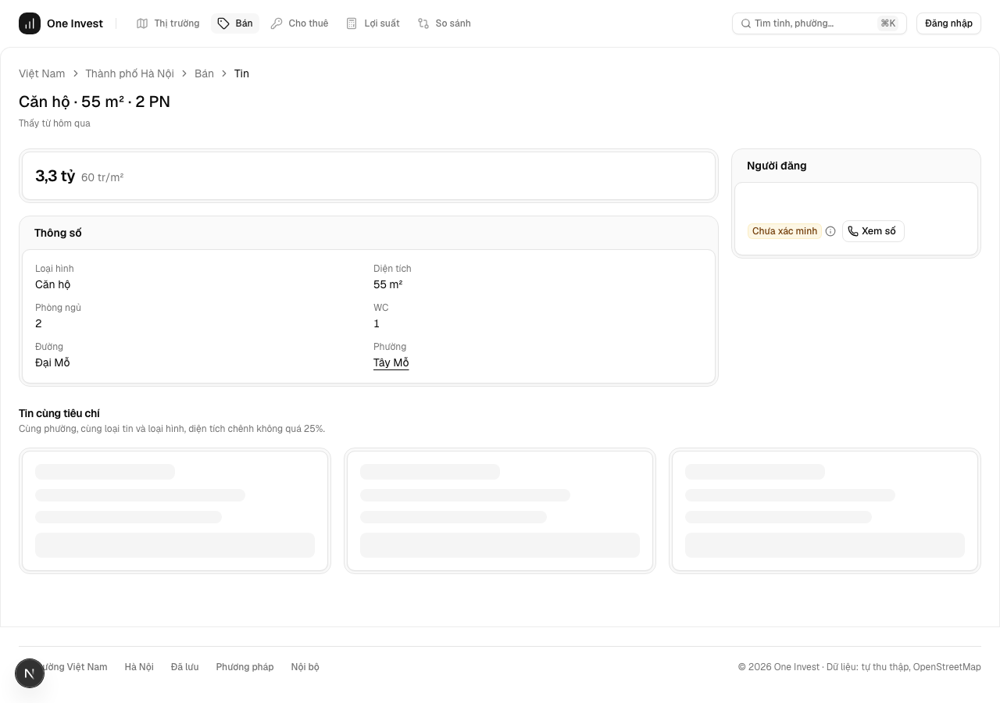
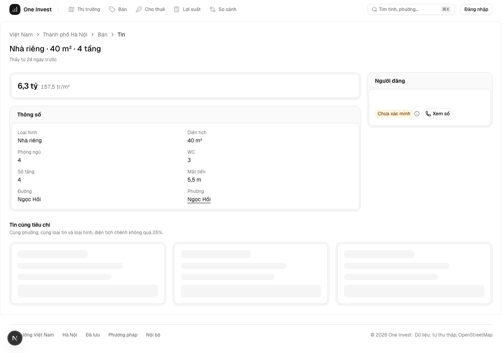

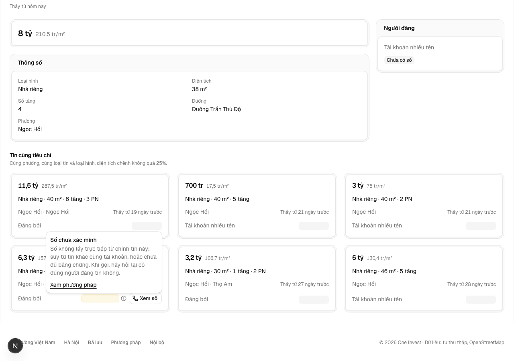
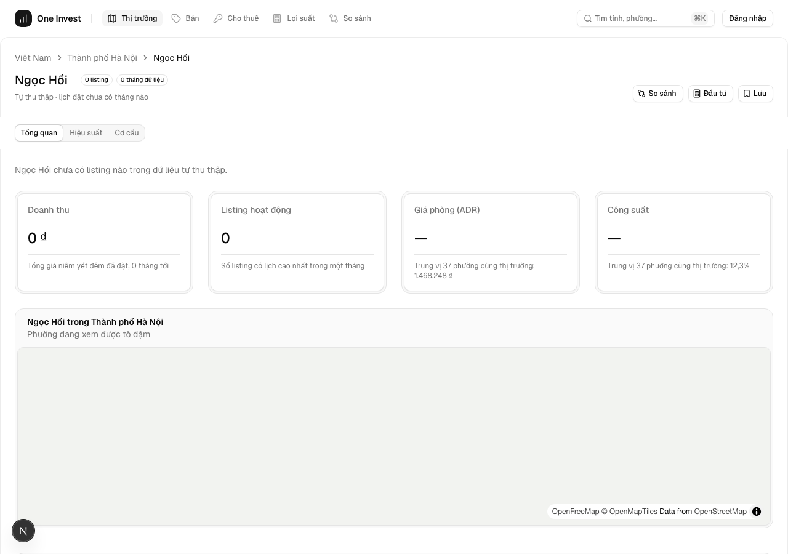


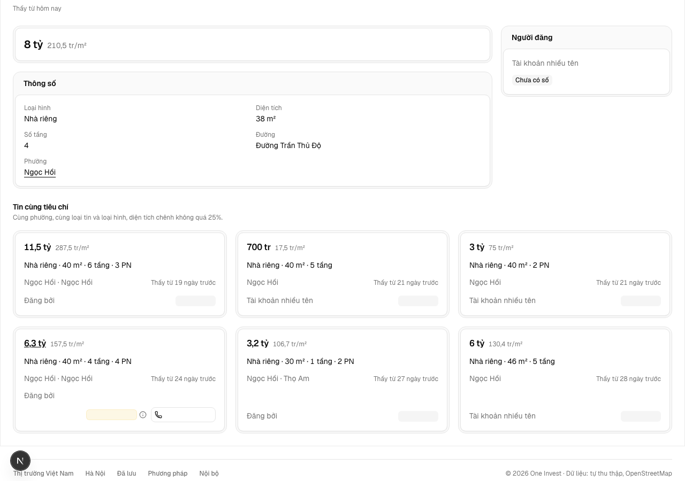

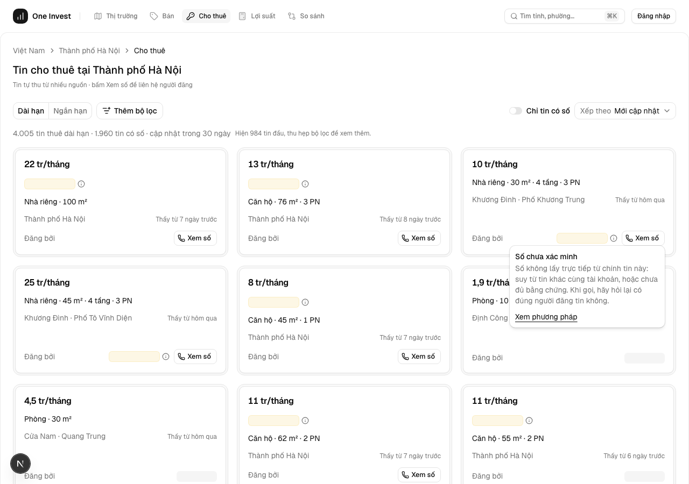
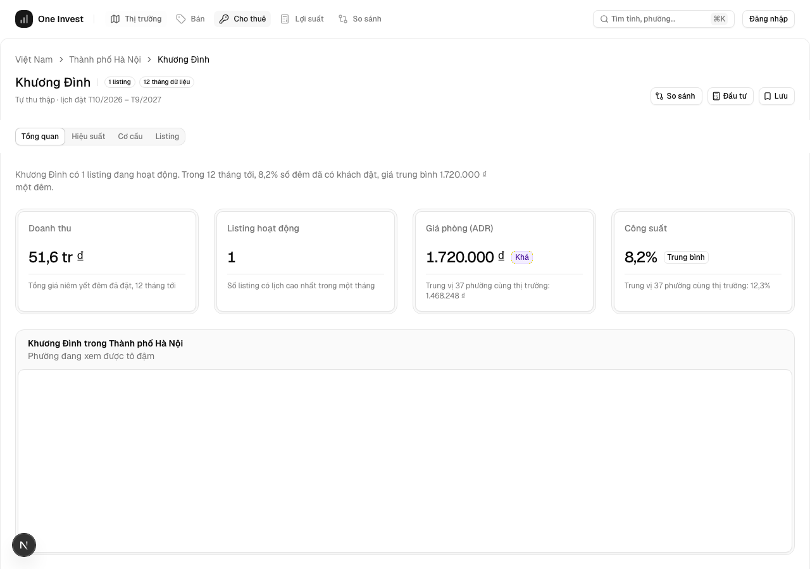
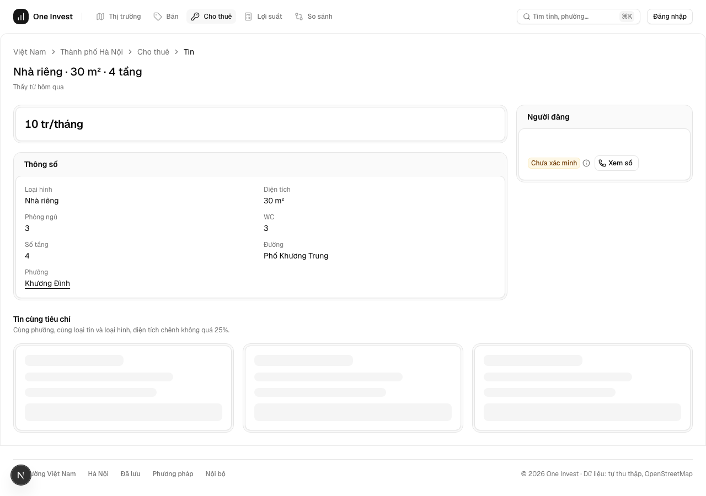

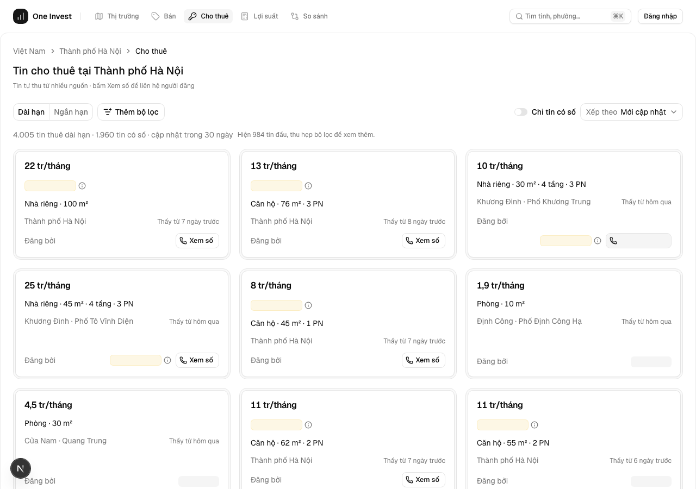

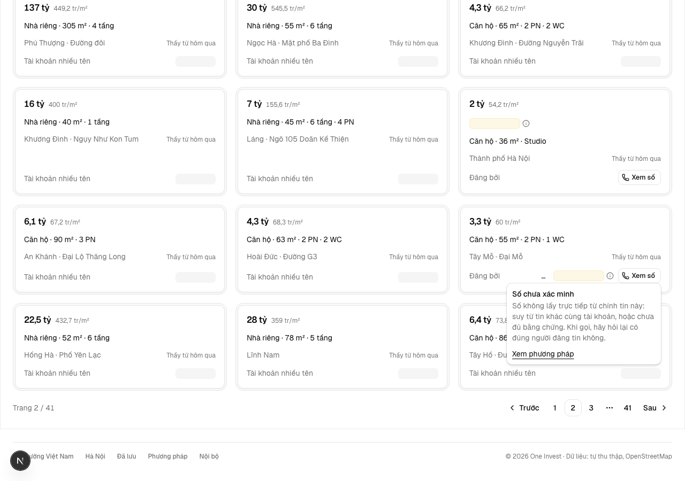
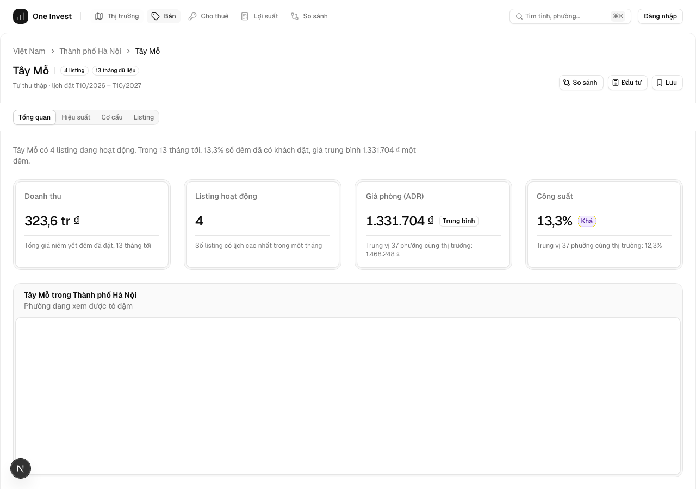

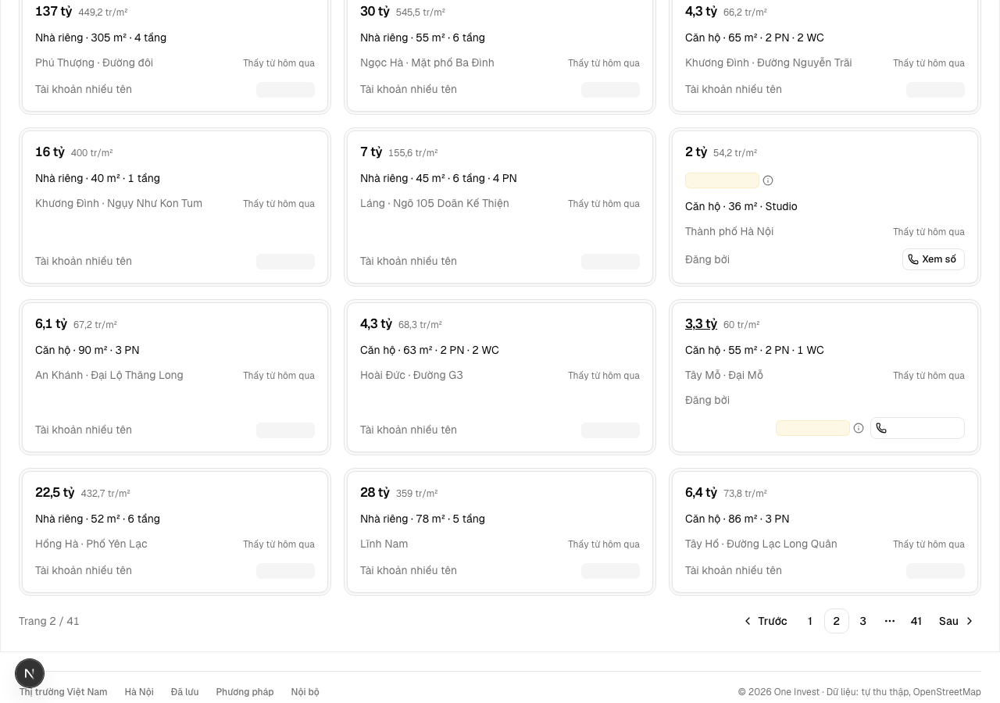
PASS E2 · test
AC-2: (cross-layer) Given ma trận loại hình (căn hộ, nhà, đất) × kind × đủ hoặc thiếu trường ghi vào DB thử, When mở trang tin, Then hiện đúng giá, đơn giá, nhãn tin, thông số gồm block, tầng, vị trí, tuổi tin, người đăng; trường thiếu thì bỏ dòng; tin cấp thị trường có tên thị trường, không liên kết phường; mọi cột trang đọc đều có trong `CLOUD_ALLOW`.
cd app && node --import tsx --test tests/trang-chi-tiet-tin.test.tsx ca TCT-AC-2-ve xanh ℹ duration_ms 1019.925375
PASS E2b · test
AC-2: (cross-layer) Given ma trận loại hình (căn hộ, nhà, đất) × kind × đủ hoặc thiếu trường ghi vào DB thử, When mở trang tin, Then hiện đúng giá, đơn giá, nhãn tin, thông số gồm block, tầng, vị trí, tuổi tin, người đăng; trường thiếu thì bỏ dòng; tin cấp thị trường có tên thị trường, không liên kết phường; mọi cột trang đọc đều có trong `CLOUD_ALLOW`.
tests/trang-chi-tiet-tin-db.test.tsx trên DB thử oneinvest_tct ℹ duration_ms 63972.229042
PASS E3 · test
AC-3: (cross-layer) Given tin có số, When tải trang qua máy chủ Next và chưa bấm, Then phản hồi HTTP, kể cả dữ liệu nhúng `__next_f`, không chứa số; bấm Xem số gọi đúng `/api/v1/listings/<id>/contact`; mọi trạng thái `ST-lien-he-*` và nhãn số giống trên thẻ.
tests/trang-chi-tiet-tin-db.test.tsx trên DB thử oneinvest_tct ℹ duration_ms 63972.229042
PASS E4 · test
AC-4: (cross-layer) Given tin của S03, S05, S06 mang giá trị đánh dấu ở mọi cột cấm (`source`, `listing_url`, `post_ids`, `seller_ref`, `field_provenance`, `street_number`, `unit_number`, toạ độ) và tên nguồn thật giả trong tên người đăng, block, tầng, đường, When tải trang chưa đăng nhập qua máy chủ Next, Then phản hồi HTTP gồm thẻ head, meta description, dữ liệu nhúng, cả thẻ trong khối tin cùng tiêu chí, không có giá trị đánh dấu nào; bản sao lộ một cột, kể cả chỉ truyền qua props mà không in, thì đỏ và gọi tên cột.
tests/trang-chi-tiet-tin-db.test.tsx trên DB thử oneinvest_tct ℹ duration_ms 63972.229042
PASS E5 · test
AC-5: (cross-layer) Given ma trận tin không hiện (id lạ, S02, S08, quá hạn, kind khác, giá phi lý, không có loại hình), When mở `/listing/<id>`, Then mọi ca cùng trạng thái 404 và cùng một câu «Tin này không còn hiện», khớp `getOfferPhone`; tin hiện được thì 200.
tests/trang-chi-tiet-tin-db.test.tsx trên DB thử oneinvest_tct ℹ duration_ms 63972.229042
PASS E6 · script
AC-6: Given listing thuê ngắn hạn `abnb_…`, When mở `/listing/<id>`, Then trang cũ không đổi, KPI, lịch, comps còn nguyên, và `check-listing-no-airdna` xanh.
listing-no-airdna: ĐẠT
PASS E6b · test
AC-6: Given listing thuê ngắn hạn `abnb_…`, When mở `/listing/<id>`, Then trang cũ không đổi, KPI, lịch, comps còn nguyên, và `check-listing-no-airdna` xanh.
cd app && node --import tsx --test tests/trang-chi-tiet-tin.test.tsx ca TCT-AC-6 xanh ℹ duration_ms 1019.925375
PASS E7 · test
AC-7: (cross-layer) Given ma trận tin cùng và khác phường, loại tin, loại hình, biên diện tích ±25%, When mở tin, Then chỉ hiện tin đúng tiêu chí, không có chính nó, tối đa 6, đều qua `VISIBLE`; không có tin thì `Empty` kèm nút về danh sách đã lọc; tin cấp thị trường không có khối; lỗi truy vấn thì báo trong vùng kèm Thử lại.
tests/trang-chi-tiet-tin-db.test.tsx trên DB thử oneinvest_tct ℹ duration_ms 63972.229042
PASS E8 · test
AC-8: Given trang tin, When đọc thẻ head, Then có `noindex`, tiêu đề không có tên người đăng; trang listing thuê ngắn hạn không đổi.
cd app && node --import tsx --test tests/trang-chi-tiet-tin.test.tsx ca TCT-AC-8 xanh ℹ duration_ms 1019.925375
PASS E9 · ui-check
AC-9: Given bản chạy ở 375 và rộng, sáng và tối, When xem các trạng thái của bảng Đặc tả UX, Then đọc được, liên hệ thấy mà không phải cuộn xa, không tràn ngang, đúng luật ReUI.
PASS E10 · test
AC-9: Given bản chạy ở 375 và rộng, sáng và tối, When xem các trạng thái của bảng Đặc tả UX, Then đọc được, liên hệ thấy mà không phải cuộn xa, không tràn ngang, đúng luật ReUI.
cd app && node --import tsx --test tests/trang-chi-tiet-tin.test.tsx ca TCT-AC-9 xanh ℹ duration_ms 1019.925375
PASS E11 · script
AC-9: Given bản chạy ở 375 và rộng, sáng và tối, When xem các trạng thái của bảng Đặc tả UX, Then đọc được, liên hệ thấy mà không phải cuộn xa, không tràn ngang, đúng luật ReUI.
design-gate trên app/src/components/listing/offer-body.tsx: không vi phạm P0
PASS E12 · script
AC-9: Given bản chạy ở 375 và rộng, sáng và tối, When xem các trạng thái của bảng Đặc tả UX, Then đọc được, liên hệ thấy mà không phải cuộn xa, không tràn ngang, đúng luật ReUI.
design-floor-s4 --root . : không hex thô
Eval không phân biệt (Analyst)
Vòng verify
- Round 1: có lượt chấm r1 siết thước (commit 3dfa8dcb, đo HTTP trên bản build), trả về triển khai.
- Round 2: toàn bộ 15 eval và 6 lệnh suite xanh trên 3dfa8dcb; verdict PASS.
Tài nguyên
| Khối | Tác tử | Token đầu ra |
|---|---|---|
| S4 round 1 | 34 | 156.329 |
| S4 round 2 | 23 | 132.079 |
2 lượt chấm · tổng 288.408 token
Giới hạn và ngoài hợp đồng
- OOS-1: Ảnh tin: hàng `anh-tin-cong-khai` (AC1). Không vẽ ô ảnh trống.
- OOS-2: Bản đồ, số nhà, số căn: chưa lên cloud; thêm là việc `sync-cloud` hạng T3.
- OOS-3: Bài gốc, liên kết nguồn, tên hay mã nguồn: luật 6. Vấp 2 của phiên lái thử không làm ở đây.
- OOS-4: Mô tả do máy viết lại từ bài gốc: cần quyết định riêng về luật 6.
- OOS-5: Lưu tin, chia sẻ, tin khác của người đăng, lịch sử giá, báo cáo tin sai.
- OOS-7: So giá với phường: `market_asset_stats` chưa có loại hình, thêm là migration hạng T3 (Hỏi-5).
- OOS-6: Gộp bảng `sale_offers` với `listings`, gộp tin theo căn nhà.
Giao
chưa ghi quan sát production